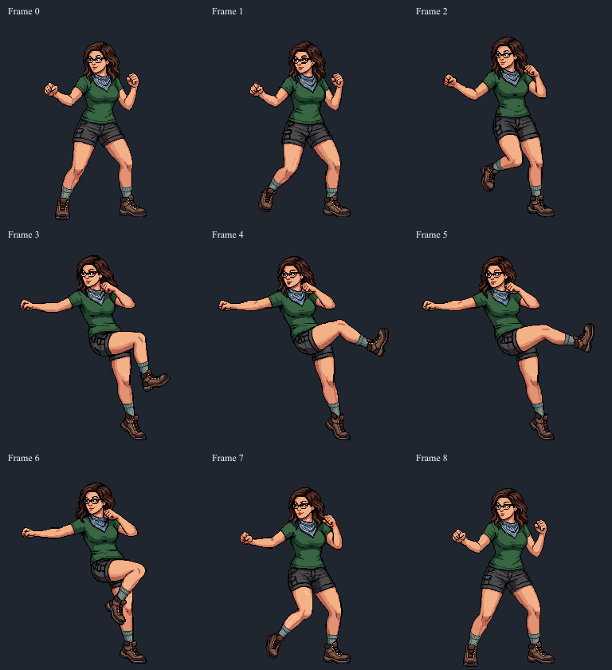

Source review only. 8 generations. Current idle reference at left; candidate at right. Both at native pixel scale.
Check leftward extension, planted support foot, proportions, and return to guard. Preview rate does not change combat timing.
